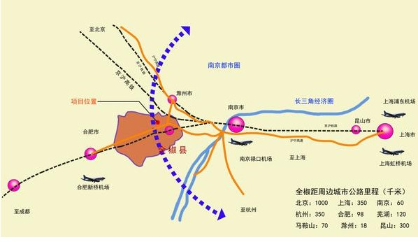

安徽荣鸿农业科技示范园区位于安徽省滁州市全椒县，全椒县位于安徽省东部，江淮分水岭南侧。东部、北部与南谯区接壤，西部与肥东县毗邻，西南、南、东南部隔滁河与居巢区、含山、和县及江苏南京相望。
本项目位置 全椒县林业用地面积达44.1万亩，林木总蓄积170万立方米，森林覆盖率30.7%。获得“全国造林绿化百佳县”“全国造林绿化模范县”“全国生态示范县”“安徽省造林绿化先进集体”等荣誉称号。
全椒县内旅游景点有“两山两湖一寺”——神山国家森林公园、南屏山省级森林公园，碧云湖和卧龙湖以及龙山寺景区，旅游资源较为丰富。
全椒县文化源远流长，民风质朴。“走太平”、“桃花节”等现存大型民俗传统在华中、华东、长三角地区有一定的影响力。
全椒县和谐的人文环境及适宜的气候、地质、水源、便捷的交通等条件促使本园区落户该地。
安徽金牛农业科技示范园规划 金牛农业科技示范总体规划种植面积约12000亩，预计项目总投资5亿元，计划分三期开发建设。
其中，一期种植面积约5900亩，主要以引进国内外珍稀树种与园林绿化工程树种为主，主要种植品种有加拿大曼地亚红豆杉1000亩、四川小叶桢楠500亩，丹桂、龙桂为主体的桂花1000亩，台湾桤木500亩，以日本晚樱为主的各种樱花1000亩，以及金丝垂柳、银杏、合欢等绿化苗木1900亩，计划通过一年时间的建设，在安徽全椒石沛镇建立一个现代化、集约化、科技含量高的农业科技示范园区，一期项目预计总投资1.5亿元，2014年完成投资建设。
二期项目计划用地6000亩，计划2014年11月启动，2015年6月底完成全部苗木栽种，预计项目投资1.5亿元左右。主要以小叶桢楠和加拿大曼地亚红豆杉、台湾桤木等珍稀树种为主要种植品种。
三期项目主要为：建设以紫杉醇提炼、加工为主的生物医药项目；开办以红豆杉、桂花和樱花为原料的农、林产品深加工企业。预计项目投资约2亿元，2015年初开始筹备建设，预计2015年底投产。
通过以上整体规划、分步开发、逐步完善产业链及环境改善，使整个园区成为集珍稀树种苗木繁育、常规绿化苗木种植、生态农业示范、生态旅游、休闲度假于一体，且具有经济效益、生态效益和社会效益的一流农业科技示范园区。